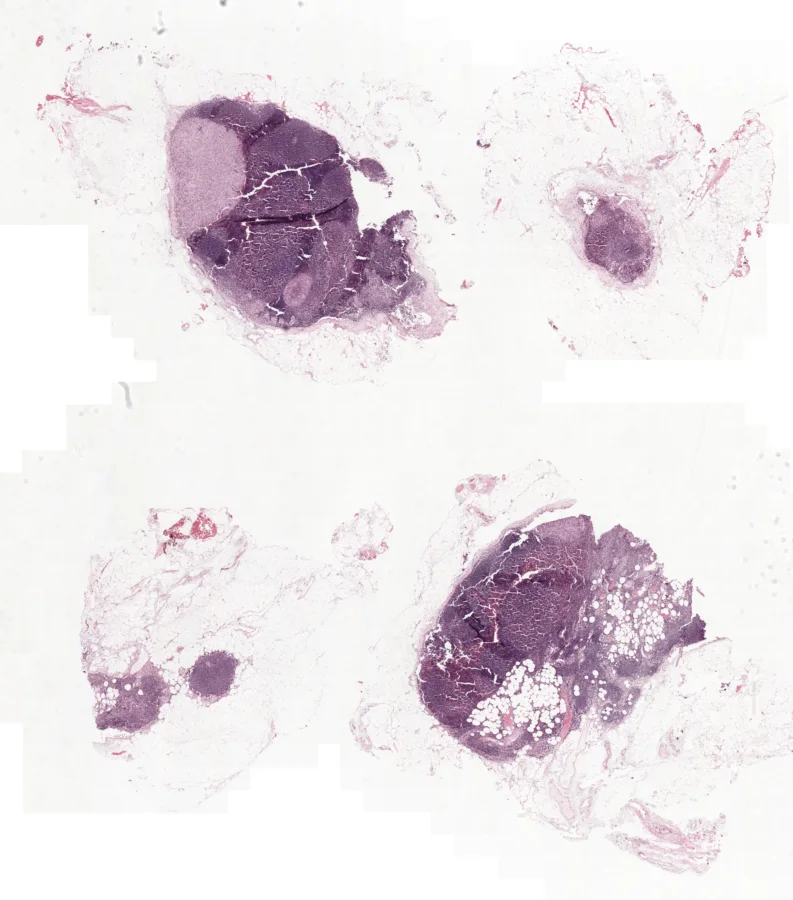
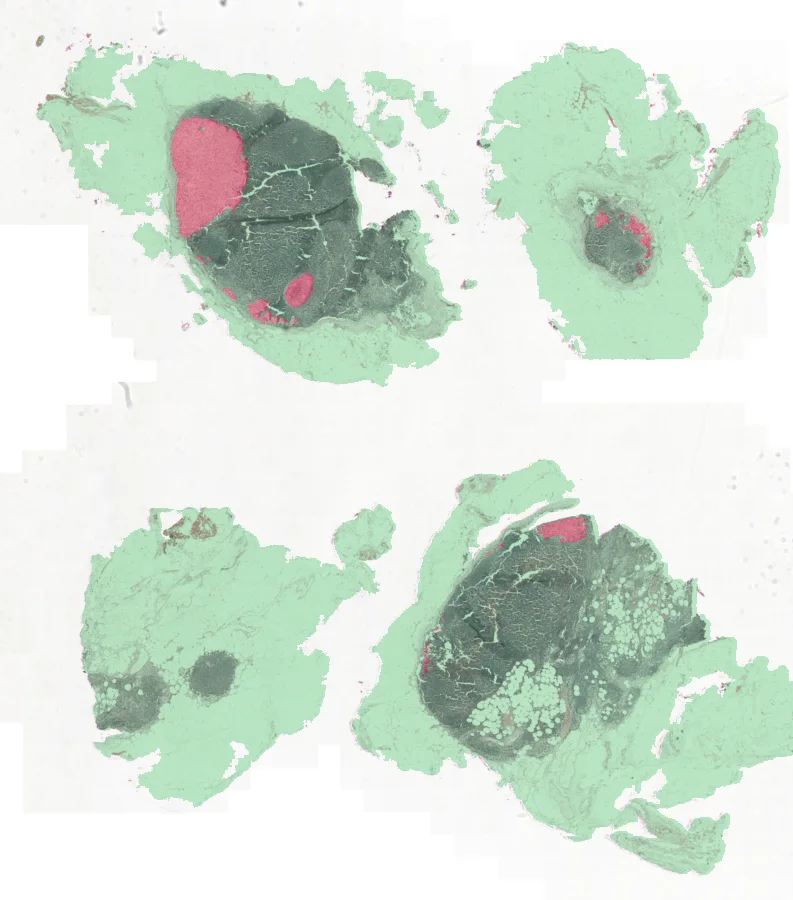
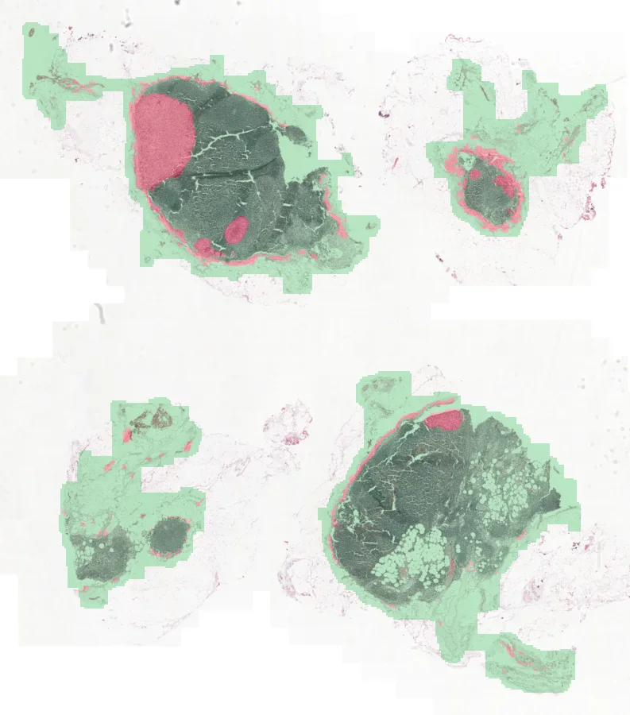
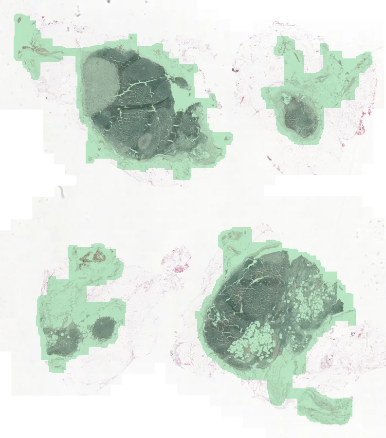

View official expert annotation
All five workflows completed this slide. The official reference contains 4,128,343 known code-1/code-2 pixels; 126,673 are metastasis and 1,664,968 (40.3%) lie outside the reviewed display support. All scores use the same known-pixel denominator, including those outside support. Native output is primary; shared-support output is a separate sensitivity analysis.
Bora was fitted only on tumor_093. The class-aware U-Net and DeepLabV3+ checkpoints used tumor_093 only after Benchmark 1 pretraining. MedSAM received boxes from this one-slide U-Net; VISTA-PATH uses a released generic “tumor” prompt. These are configured workflow comparisons with different prompt dependencies and pretraining, not a controlled architecture ranking.
Predicted metastasis and non-metastatic tissue signals
An exploratory signal requires an eight-connected focus of at least 625 pixels (0.01 mm²) inside the common reviewed H&E tissue area. This rule was fixed before this reference was opened. It is not a diagnosis.
| Method | Tumor-like focus | Explicit non-metastatic focus | Largest tumor-like focus, mm² | Total tumor-like area, mm² |
|---|---|---|---|---|
| Bora · tumor_093-only fit | Present | Present | 2.1792 | 4.6964 |
| Class-aware U-Net · tumor_093-only fit | No qualifying focus | Present | 0.0015 | 0.0071 |
| DeepLabV3+ · tumor_093-only fit | Present | Present | 0.0210 | 0.1628 |
| MedSAM with U-Net boxes | No qualifying focus | Not available | 0.0020 | 0.0076 |
| VISTA-PATH generic tumor prompt | Present | Not available | 3.4314 | 6.6480 |
Binary agreement on official known pixels
Balanced accuracy averages metastatic sensitivity and non-metastatic specificity. The official reference supports only binary metastasis assessment; this is not eight-class WSI accuracy.
| Method | Precision | Recall | Dice | IoU, native | IoU, shared support | Balanced accuracy, native | Balanced accuracy, shared | Boundary F1 at 5 µm, native | Lesions matched, native | False-positive tissue, mm², native |
|---|---|---|---|---|---|---|---|---|---|---|
| Bora · tumor_093-only fit | 34.6% | 90.7% | 50.1% | 33.4% | 38.5% | 92.6% | 93.3% | 2.9% | 5/53 | 2.997 |
| Class-aware U-Net · tumor_093-only fit | 49.5% | 0.2% | 0.3% | 0.2% | 0.2% | 50.1% | 50.1% | 1.4% | 0/53 | 0.004 |
| DeepLabV3+ · tumor_093-only fit | 1.6% | 0.1% | 0.2% | 0.1% | 0.1% | 49.9% | 49.9% | 1.5% | 0/53 | 0.160 |
| MedSAM with U-Net boxes | 43.9% | 0.2% | 0.3% | 0.2% | 0.2% | 50.1% | 50.1% | 0.8% | 0/53 | 0.004 |
| VISTA-PATH generic tumor prompt | 26.9% | 88.0% | 41.1% | 25.9% | 25.9% | 90.2% | 90.2% | 5.5% | 9/53 | 4.859 |
Completion: five of five methods. See exact denominators, confusion counts, boundary and lesion metrics. The selected public-release slide does not estimate population performance; patient and center overlap with fitting remains unverified.
Contour fidelity: Bora was scored on a 4 µm grid. Its class mask received 6 µm smoothing, while the reviewed H&E tissue boundary remained fixed. This GeoJSON traces the exact scored mask; no extra vector smoothing was applied because that would move boundaries and change pixel agreement. Grid steps can remain visible at high zoom, especially along tissue edges.
Inspect the exact Bora GeoJSON
Interactive inspection is loading. Download the saved Bora GeoJSON.
Color key for matched panels: red is a tumor-like positive signal and green is the binary negative area inside the reviewed H&E tissue support. Bora, U-Net and DeepLabV3+ explicitly output a non-metastatic class. MedSAM and VISTA-PATH do not: their green is derived by exclusion of their positive signal for display and binary scoring, not a separate benign tissue prediction.
Tissue-region overview · analysis restricted to reviewed tissue



